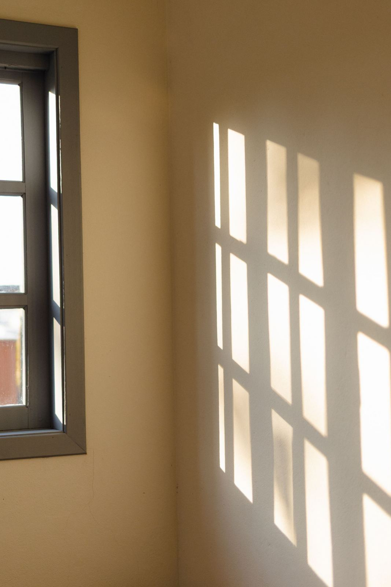

For Families
A Partnership with the Domestic Church
[PLACEHOLDER IMAGE, NOT HOLY FAMILY]
Pages for praying, learning and practising the faith together at home. [NEW COPY — DRE TO APPROVE]
Pray and practise at home
Prayers
Six prayers to read, print and pray together at home. [NEW COPY — DRE TO APPROVE]
Learn moreEvangelization for Kids
As a growing disciple, I am learning to: connect, understand, serve and share. [NEW COPY — DRE TO APPROVE]
Learn moreCreating a Space for God
A Prayer Space reminds us of God’s presence and helps to make a connection between church and home.
Learn moreSowing Seeds
Donations are meant to support the Faith Formation for Children Ministry at Holy Family.
Learn moreSeasonal
Activities for the seasons of the Church year. [NEW COPY — DRE TO APPROVE]
Learn moreLearn more
Catholic Social Teaching
All principles of Catholic social teaching are based on the truth of human dignity.
Learn moreCatholic Websites
Trusted places to read and learn more. [NEW COPY — DRE TO APPROVE]
Learn moreAlso from the ministry
Birthday Prayer Tradition
Today my heart is filled with joy, as I celebrate my birthday.
Learn moreFall Project Gratuity Pumpkin
Supplies: Smooth Pumpkin and a Sharpie Marker
Learn more[PLACEMENT OF THESE TWO PAGES — DRE TO CONFIRM]